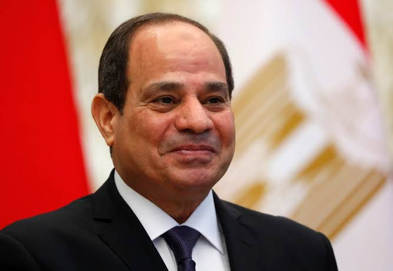

بدءا من إنشاء المجلس الأعلى للتغيرات المناخية، والذى تم بموجب قرار رئيس مجلس الوزراء عام 2015 ، وتم إعادة تشكليه فى-1
عام 2019 برئاسة رئيس مجلس الوزراء وعضوية الوزراء المعنيين، ليصبح هو الجهة المعنية برسم السياسات العامة للتعامل مع
التغيرات المناخية والعمل على وضع وتحديث الاستراتيجيات الخاصة بها.
2- إطلاق الاستراتيجة الوطنية لتغير المناخ 2050 ، والتى تهدف إلى التصدي لآثار تغير المناخ، هى جزء رئيسى من تمكن الدولة من
تخطيط وإدارة هذا الملف، من أجل تحقيق نمو اقتصادي مستدام، إضافة إلى التكيف مع التغيرات المناخية، وايضا تحسن حوكمة وادارة
العمل فى هذا الملف.
3- إطلاق خطة تحديث المساهمات المحددة وطنيا، والتى جاءت انطلاقا من التزام مصر فى اتفاق باريس وذلك قبل الموعد المحدد لها
فى نوفمبر 2022، لتكون مصر بذلك أول دولة تقوم بهذا التحديث وتقدمه قبل الموعد المحدد له.
4- العمل على التحول إلى الاقتصاد الأخضر، وسعى الدولة لدمج البعد البيئي فى كافة المجالات.
5- إصدار السندات الخضراء التى ارتبط بالمشروعات الخاصة بمواجهة التغيرات المناخية سواء فى التخفيف او التكيف.
6-سعى الحكومة المصرية إلى تخضير الموازنة العامة للدولة، بهدف للوصول إلي نسبة 100% مشروعات خضراء بحلول عام 2030.